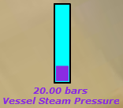
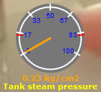
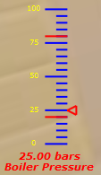
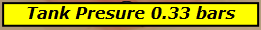
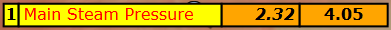
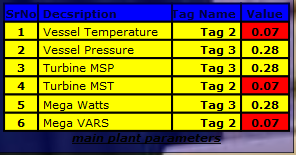
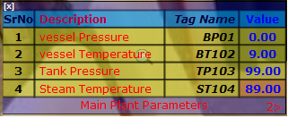
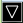
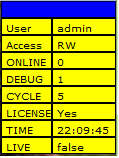
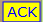

General notes:
Colour is always specified as #rrggbb or 0Xrrggbb where rr,gg and bb are hexadecimal numbers from 00 to ff,
giving intensity of red/blue/green components of colour e.g. 000000ff - for full blue, 000000 for black ffffff for white etc.
Dimensions like Component height/width parameters always specified in pixels.
Documentation for Bar

This component displays an analog value of a tag in a single bar graph.
The value and its description are displayed at the bottom of the bar.
The bar and the value text colour and blinking pattern depend upon the tag state and properties given below.
ver="1" -- (0 or 1) displays version number of component in debug window.
fillcolour="0x0000FF" -- fill colour of the bar
emptycolour="0xFFFFFF" -- empty colour of the bar
barwidth="20" -- barwidth in pixels
barheight="100" -- barheight in pixels
bordercolour="0x000000" -- colour of border line
borderwidth="1" - thickness of border line in pixels
fcolour="0xFF0000" -- colour of font for value display
fnt="5" -- font type 1 to 6 (Times New Roman, Arial, Calibri, Helvetica, Verdana, Century).
fsiz="4" -- font size 1 to 6 (10, 11, 12 14, 16, 18)
bartag="@[default]Tag 0" -- Fully qualified TagPath as defined in TagPath file prefixed with @)
maxvalue="100" -- max value represented by bar
minvalue="0" -- min value represented by bar
units="bars" -- units of data represented by bar
description="Boiler Pressure" -- description of value represented by bar
decimals="2" -- Number of decimals in value display(should be >=0)
mult="1.0" -- multiplication factor for value display (default 1)
just="0" -- Text justification for value display (0-left, 1-middle, 2-right)
italic="0" -- Text italic for value display (0 - No, 1- Yes)
bold="0" -- Text bold for value display (0 - No, 1- Yes)
opacity="0.5" -- Transparency of the component on screen (0.0 to 1.0)
state0colour="0xFFFF00" -- colour for state 0. Bar and value text will be filled with this colour in state 0 of the Tag
state1colour="0xFFA500" -- colour for state 1. Bar and value text will be filled with this colour in state 1 of the Tag
.
.
state9colour="0x0000FF" -- colour for state 9. Bar and value text will be filled with this colour in state 9 of the Tag
state0blink="0" -- blink rate for state 0. (0 - no blink, 1 - slow blink (1 cps), 2 - fast blink(2 cps))
state1blink="1" -- blink rate for state 1. (0 - no blink, 1 - slow blink (1 cps), 2 - fast blink(2 cps))
.
.
state9blink="2" -- blink rate for state 9. (0 - no blink, 1 - slow blink (1 cps), 2 - fast blink(2 cps))
Documentation for Meter

This component displays the analog value of a tag in a dial or meter.
The value and its description are displayed at the bottom of the meter.
The needle and the value text colour and blinking pattern depend upon state of the tag state and properties given below.
ver="1" -- displays version number of component in debug window
fillcolour="#777777" -- dial colour
needlecolour="#FF0000" -- colour of needle of meter
radius="50" -- radius in pixels of the dial
bordercolour="0xffffff" -- colour of the dial ticks
borderwidth="2" -- thickness in pixels of dial ticks
fcolour="0x0000ff" -- font colour of dial ticks
fnt="2" -- font type 1 to 6 (Times New Roman, Arial, Calibri, Helvetica, Verdana, Century)
fsiz="1" -- font size 1 to 6 (10, 11, 12 14, 16, 18) of dial ticks
italic="0" -- italic font style for dial ticks (0-no italic, 1-italic)
bold="0" -- bold font style for dial ticks (0-plain, 1-bold)
just="1" -- justification for font for dial ticks
vfcolour="0xFF0000" -- font colour for value display
vfnt="5" -- font type for value display
vfsiz="2" -- font size 1 to 6 (10, 11, 12 14, 16, 18) for value display
vitalic="0" -- italic font style for value display (0-plain, 1-italic)
vbold="1" -- bold font style for value display (0-plain, 1-bold)
vjust="1" -- text justification for value display (0-left, 1-center, 2-right)
metertag="[default]Tag 0" -- tag name (after last "/" in TagPath as given in TagPaths file, excluding @)
maxvalue="100" -- maximum value displayed in meter
minvalue="0" -- minumum value displayed in meter
almin="15" -- minimum alarm limit to be displayed in dial (optional)
almax="85" -- maximum limit to be displayed in dial
units="kg/cm2" -- units of tag value to be displayed
description="Turbine Steam Pressure" -- description of tag to be displayed.
decimals="2" -- decimals places to be displayed in value text (should be >=0)
decimalscale="0" -- decimal places to be displayed in the dial ticks (should be >=0))
mult="1.0" -- optional multiplication factor for display of tage value (default 1)
opacity="0.5" -- Transparency of the component on screen (0.0 to 1.0)
divisions="5" -- number of divisions to be displayed on the dial (can be 5 or 6 only)
state0colour="0xFFFF00" -- colour of needle and value text for tag state 0.
state1colour="0xFFA500" -- colour of needle and value text for tag state 1.
.
.
state9colour="0x0000FF" -- colour of needle and value text for tag state 9.
state0blink="0" -- blink rate for state 0 of tag (0-no blink, 1-slow blink(1 cps), 2- fast blink (2 cps))
state1blink="1" -- blink rate for state 1 of tag (0-no blink, 1-slow blink(1 cps), 2- fast blink (2 cps))
.
.
state9blink="2" -- blink rate for state 9 of tag (0-no blink, 1-slow blink(1 cps), 2- fast blink (2 cps))
Documentation for Scale

This component displays the analog value of a tag in a scale.
The value and its description are displayed at the bottom of the scale.
The colour and blinking pattern of the pointer and the value text depend upon state of the tag state and properties given below.
ver="1" -- displays version number of component in debug window
barwidth="40" -- width of scale in pixels
barheight="100" /-- height of scale in pixels
scalecolour="0xFFFFFF" -- scale ticks colour
scalethick="1" -- thickness in pixels of scale ticks
fcolour="0x0000ff" -- font colour of scale ticks
fnt="2" -- font type 1 to 6 (Times New Roman, Arial, Calibri, Helvetica, Verdana, Century)
fsiz="1" -- font size 1 to 6 (10, 11, 12 14, 16, 18) of scale ticks
italic="0" -- italic font style for scale ticks (0-no italic, 1-italic)
bold="0" -- bold font style for scale ticks (0-plain, 1-bold)
just="1" -- justification for font for scale ticks
vfcolour="0xFF0000" -- font colour for value display
vfnt="5" -- font type for value display 1 to 6 (Times New Roman, Arial, Calibri, Helvetica, Verdana, Century)
vfsiz="2" -- font size 1 to 6 (10, 11, 12 14, 16, 18) for value display
vitalic="0" -- italic font style for value display (0-plain, 1-italic)
vbold="1" -- bold font style for value display (0-plain, 1-bold)
vjust="1" -- text justification for value display (0-left, 1-center, 2-right)
metertag="[default]Tag 0" -- fully qualified TagPath as given in TagPaths file, excluding @)
maxvalue="100" -- maximum value displayed in scale
minvalue="0" -- minumum value displayed in scale
almin="15" -- minimum alarm limit to be displayed in scale (optional)
almax="85" -- maximum limit to be displayed in scale
units="kg/cm2" -- units of tag value to be displayed
description="Turbine Steam Pressure" -- description of tag to be displayed.
decimals="2" -- decimals places to be displayed in value text (should be >=0)
decimalscale="0" -- decimal places to be displayed in the dial ticks (should be >=0))
mult="1.0" -- optional multiplication factor for display of tage value (default 1)
opacity="0.5" -- Transparency of the component on screen (0.0 to 1.0)
divisions="5" -- number of divisions to be displayed on the dial (can be 5 or 6 only)
state0colour="0xFFFF00" -- colour of needle and value text for tag state 0.
state1colour="0xFFA500" -- colour of needle and value text for tag state 1.
.
.
state9colour="0x0000FF" -- colour of needle and value text for tag state 9.
state0blink="0" -- blink rate for state 0 of tag (0-no blink, 1-slow blink(1 cps), 2- fast blink (2 cps))
state1blink="1"-- blink rate for state 1 of tag (0-no blink, 1-slow blink(1 cps), 2- fast blink (2 cps))
.
.
state9blink="2" -- blink rate for state 9 of tag (0-no blink, 1-slow blink(1 cps), 2- fast blink (2 cps))
Documentation for MultiStateInd
This component is multistate display indicator, showing various states of an equipment
The state is displayed as a dynamic text in the button based on value of a binary,integer value of a Tag
ver="1"-- displays version number of component in debug window
msitag="@[default]Tag 1" -- fully qualified tag path as given in tag paths file
bordercolour="0x000000" -- border colour for button.
borderthickness="2" -- border thickness for button
cellbackgroundcolour="0xFFFF00" -- background colour for cell.
fcolour="0x0000ff" -- font colour of text in the button
fnt="2" -- font type 1 to 6 (Times New Roman, Arial, Calibri, Helvetica, Verdana, Century) for text in the button
fsiz="1" -- font size 1 to 6 (10, 11, 12 14, 16, 18) of text in the button
italic="0" -- italic font style for text in the button (0-no italic, 1-italic)
bold="0" -- bold font style for text in the button (0-plain, 1-bold)
just="1" -- justification for font for text in the button
opacity="0.5" -- Transparency of the component on screen (0.0 to 1.0)
state0colour="0xFFFF00" -- button fill colour for tag state 0.
state1colour="0xFFA500" -- button fill colour for tag state 1.
.
.
state0="OFF" -- button label for tag state 0. Tag states are defined in tag-paths input file
state1="ON" -- button label for tag state 1. Tag states are defined in tag-paths input file
state2="TRIP" -- button label for tag state 1. Tag states are defined in tag-paths input file
.
.
state9="state9" -- button label for tag state 9. Tag states are defined in tag-paths input file
state0blink="0" -- button blink rate for state 0 of tag (0-no blink, 1-slow blink(1 cps), 2- fast blink (2 cps))
state1blink="1" -- button blink rate for state 1 of tag (0-no blink, 1-slow blink(1 cps), 2- fast blink (2 cps))
.
.
state9blink="2" -- button blink rate for state 9 of tag (0-no blink, 1-slow blink(1 cps), 2- fast blink (2 cps))
Documentation for StaticText

This component displays a single line of static text on the screen for labeling/annotating the image.
ver="1" -- displays version number of component in debug window
cellvar="This is static text" -- the static string to be displayed
fnt="5" -- font type 1 to 6 (Times New Roman, Arial, Calibri, Helvetica, Verdana, Century) for the static text
fsiz="4" -- font size 1 to 6 (10, 11, 12 14, 16, 18) for static text.
fbold="0" -- font bold style for static text(0-plain, 1-bold)
fjust="1" -- font justification for static text(0-plain, 1-italic)
border="1" -- whether to display the text in a surrounding box (1-with box, 0-without box).
cellalpha="1" -- alpha (number between 0.0 to 1.0) of cell opacity (1.0=opaque, 0.0-transparent)
borderthickness="1" -- thickness of surrounding box in pixels, if provided.
bordercolour="0x0000FF" -- colour of the border of surrounding box, if provided
cellbackgroundcolour="0xffff00" -- background colour of the surrounding box, if provided
Documentation for Cell

This component displays a dynamic value of a tag with its description and units in a cell.
ver="0"-- (0,1) to displays version number of component in debug window
celltag="@[default]Tag 1" -- fully qualified tag path of the tag driving this display
-- cell width is automatically calculated based on cellvar attribute, give leading/trailing blanks to adjust cell width
decimals="2" -- number of deicmal places in value display (should be >=0)
stateind="0" -- 0-don't display state of the Tag, 1-display state with state colour and blink rate
mult="1.0" -- multiplication factor for value display (default 1)
bordercolour="0x000000" -- colour of the border line of the cell
borderthickness="2" -- thickness of the border in pixels of the cell
cellbackgroundcolour="0xFFFF00" -- default fill colour of the cell
fcolour="0xFF0000" -- font colour of the text to be displayed in cell
fnt="5" -- font type 1 to 6 (Times New Roman, Arial, Calibri, Helvetica, Verdana, Century) for text in cell
fsiz="4" -- font size 1 to 6 (10, 11, 12 14, 16, 18) for the cell text.
fbold="0" -- font style (0-normal, 1- bold) for cell text.
fitalic="0" -- font style (0-normal, 1- italic) cell text.
fjust="1" -- font justification (0-left, 1 - middle, 2 - right) for cell text
units="Kg" -- units for the value displayed in cell (will be appended with value with once space)
description="" -- description for cell value (will be prefixed with the value plus one space).
state0colour="0xFFFF00" -- cell fill colour for tag state 0.
state1colour="0xFFA500" -- cell fill colour for tag state 1.
.
.
state9colour="0x0000FF" -- cell fill colour for tag state 9.
state0blink="0" -- cell blink rate for state 0 of tag (0-no blink, 1-slow blink(1 cps), 2- fast blink (2 cps))
state1blink="1" -- cell blink rate for state 1 of tag (0-no blink, 1-slow blink(1 cps), 2- fast blink (2 cps))
.
.
state9blink="2" -- cell blink rate for state 9 of tag (0-no blink, 1-slow blink(1 cps), 2- fast blink (2 cps))
.
state0="state0" -- string to be displayed for state 0 of the tag. (e.g. ON/OFF/TRIP..etc.)
state1="state1" -- string to be displayed for state 0 of the tag. (e.g. ON/OFF/TRIP..etc.)
.
state9="state9" -- string to be displayed for state 0 of the tag. (e.g. ON/OFF/TRIP..etc.)
Documentation for Row

This component displays the static/dynamic values of a tag in single row of table with .
ver="1" -- displays version number of component in debug window
colword="1,1,0,0x000000:0:2,1,1,0x000000:0" -- format of each column (group of 4 numbers seperated by ',') seperated by ":" for each column as follows:
-- the four numbers are justification(0-left,1-center,2-right), bold(0 or 1), italic(0 or 1), colour(0xFFFFFF) for text in each column
-- the trailing numbers in group of four are optional, default values will be taken.(e.g. if colour is not specified default (black) will be used for font)
rowvar="[default]Tag 102"-- fully qualified tag path of the tag driving this display
bordercolour="0x000000" -- broder colour fo the cells in the row
borderthickness="2" -- broder thickness in pixels for the cells in the row
fcolour="0x000000" -- default font colour for the cells in the row
fnt="2" -- font type 1 to 6 (Times New Roman, Arial, Calibri, Helvetica, Verdana, Century) for text in each cell
fsiz="4" -- font size 1 to 6 (10, 11, 12 14, 16, 18) for each cell.
opacity="0.5" -- Transparency of the component on screen (0.0 to 1.0)
cellbackgroundcolour="0xFFFF00" -- default background colour of each cell
state0colour="0xFFFF00" -- background colour of cell for state 0 of a tag
state1colour="0xFFA500" -- background colour of cell for state 1 of a tag
.
state9colour="0x0000FF" -- background colour of cell for state 9 of a tag
state0blink="0" -- cell blink rate for state 0 of tag (0-no blink, 1-slow blink(1 cps), 2- fast blink (2 cps))
state1blink="1" -- cell blink rate for state 0 of tag (0-no blink, 1-slow blink(1 cps), 2- fast blink (2 cps))
.
state9blink="2" -- cell blink rate for state 0 of tag (0-no blink, 1-slow blink(1 cps), 2- fast blink (2 cps))
.
state0="state0" -- string to be displayed for state 0 of the tag. (e.g. ON/OFF/TRIP..etc.)
state1="state1" -- string to be displayed for state 1 of the tag. (e.g. ON/OFF/TRIP..etc.)
.
state9="state9" -- string to be displayed for state 9 of the tag. (e.g. ON/OFF/TRIP..etc.)
Documentation for Table

This component displays the dynamic values and key properties of gven tags in a table
This is useful for displaying a group of related parameters/properties of an equipment on the screen.
ver="1" -- displays version number of the component in debug window
rows="4" -- number of rows in the table
columns="4" -- number of columns in the table
colword="1,1,0,0x000000:0:2,1,1,0x000000:0" -- format of each column (group of 4 numbers seperated by ',') seperated by ":" for each column as follows:
-- the four numbers are text justification(0-left,1-center,2-right), bold(0 or 1), italic(0 or 1), colour(0xFFFFFF) for text in each column
-- the trailing numbers in group of four are optional, default values will be taken for not specified data
tabletags="[default]Tag 0;[default]Tag 1;[default]Tag 3
-- specify the Tag names/text to be displayed in each column in the row separated by ";"
-- in a single string. The dynamic tag values and the static key properties are displayed in each row of the table
bordercolour="0x000000" -- broder colour for the table
borderthickness="2" -- broder thickness in pixels for the table
xstart="10" -- xoffset in pixels for the table from top left corner of plugin.
ystart="10" -- yoffset in pixels for the table from top left corner of plugin.
fcolour="0x000000" -- default font colour for the cells in the table
fnt="2" -- font type 1 to 6 (Times New Roman, Arial, Calibri, Helvetica, Verdana, Century) for text in each cell
fsiz="4" -- font size 1 to 6 (10, 11, 12 14, 16, 18) for each cell.
headercolour="0x0000ff -- first row of the table is header of the table and is displayed in different colour
cellbackgroundcolour="0xFFFF00" -- default background colour of each cell
pluginbordercolour="0x000000" -- border colour for the pluginbox surrounding the table with a margin of xstart,ystart
pluginfillcolour="0x0000FF" -- fill colour of the above plugin box. (an alpha on .25 is automatically applied to this colour)
opacity="0.5" -- Transparency of the component on screen (0.0 to 1.0)
state0colour="0xFFFF00" -- background colour of cell for state 0 of a tag
state1colour="0xFFA500" -- background colour of cell for state 1 of a tag
.
state9colour="0x0000FF" -- background colour of cell for state 9 of a tag
state0blink="0" -- cell blink rate for state 0 of tag (0-no blink, 1-slow blink(1 cps), 2- fast blink (2 cps))
state1blink="1" -- cell blink rate for state 0 of tag (0-no blink, 1-slow blink(1 cps), 2- fast blink (2 cps))
.
state9blink="2" -- cell blink rate for state 0 of tag (0-no blink, 1-slow blink(1 cps), 2- fast blink (2 cps))
.
state0="state0" -- string to be displayed for state 0 of the tag. (e.g. ON/OFF/TRIP..etc.)
state1="state1" -- string to be displayed for state 1 of the tag. (e.g. ON/OFF/TRIP..etc.)
.
state9="state9" -- string to be displayed for state 9 of the tag. (e.g. ON/OFF/TRIP..etc.)
Documentation for TableMulti

This component is like above table component but for a multiple pages in the table.
ver="1" -- displays version number of the component in debug window
rows="4" -- number of rows in the table
ttitle="Main Plant Parameters:1:1:1" -- Table title followed by text justification (0-left,1-center,2-right),bold(0,1), italic(0,1) seperated by ":"
colword="1,1,0,0x000000:0:2,1,1,0x000000:0" -- format of each column (group of 4 numbers seperated by ',') seperated by ":" for each column as follows:
-- the four numbers are text justification(0-left,1-center,2-right), bold(0 or 1), italic(0 or 1), colour(0xFFFFFF) for text in each column
-- the trailing numbers in group of four are optional, default values will be taken for not specified data
mttags="[default]Tag 0;[default]Tag 1;[default]Tag 2;[default]Tag 3;[default]Tag 4;[default]Tag 5;>
-- specify the Tag names of tags values to be displayed in each column in the row separated by ";"
bordercolour="0x000000" -- broder colour for the table
borderthickness="2" -- broder thickness in pixels for the table
xstart="10" -- xoffset in pixels for the table from top left corner of plugin.
ystart="10" -- yoffset in pixels for the table from top left corner of plugin.
fcolour="0x000000" -- default font colour for the cells in the table
fnt="2" -- font type 1 to 6 (Times New Roman, Arial, Calibri, Helvetica, Verdana, Century) for text in each cell
fsiz="4" -- font size 1 to 6 (10, 11, 12 14, 16, 18) for each cell.
opacity="0.5" -- Transparency of the component on screen (0.0 to 1.0)
headercolour="0x0000ff -- first row of the table is header of the table and is displayed in different colour
cellbackgroundcolour="0xFFFF00" -- default background colour of each cell
pluginbordercolour="0x000000" -- border colour for the pluginbox surrounding the table with a margin of xstart,ystart
pluginfillcolour="0x0000FF" -- fill colour of the above plugin box. (an alpha on .25 is automatically applied to this colour)
state0colour="0xFFFF00" -- background colour of cell for state 0 of a tag
state1colour="0xFFA500" -- background colour of cell for state 1 of a tag
.
state9colour="0x0000FF" -- background colour of cell for state 9 of a tag
state0blink="0" -- cell blink rate for state 0 of tag (0-no blink, 1-slow blink(1 cps), 2- fast blink (2 cps))
state1blink="1" -- cell blink rate for state 0 of tag (0-no blink, 1-slow blink(1 cps), 2- fast blink (2 cps))
.
state9blink="2" -- cell blink rate for state 0 of tag (0-no blink, 1-slow blink(1 cps), 2- fast blink (2 cps))
.
state0="state0" -- string to be displayed for state 0 of the tag. (e.g. ON/OFF/TRIP..etc.)
state1="state1" -- string to be displayed for state 1 of the tag. (e.g. ON/OFF/TRIP..etc.)
.
state9="state9" -- string to be displayed for state 9 of the tag. (e.g. ON/OFF/TRIP..etc.)
Documentation for cursorPosition

This component is added as a plugin at topleft corner of the screen, one per scene, for showing cursor coordinates on the panoramic image.
Clicking on this will enable/disable the cross hair cursor on the image.
The last clicked position is remembered on screen and current position is dsiplayed dynamically.
The x, y coordinates in pixels as well as v and h angular coordinates are displayed.
These coordinates are to be noted down and used in placement of various components on the images.
name="curpos" -- unique name of the plugin, one per image.
align="lefttop" -- align at topleft corner of the screen
ver="1" -- displays the version number of plugin in the debug windo
keep="true" -- keeps the component displayed in case of multi scene pano.
cellbackgroundcolour="0x007777" -- background colour of the cell
fcolour="0x0000FF" -- font colour of the coordinates displayed
fnt="5" -- font type 1 to 6 (Times New Roman, Arial, Calibri, Helvetica, Verdana, Century).
fsiz="4" -- font size 1 to 6 (10, 11, 12 14, 16, 18)
fbold="0" -- font bold(=1) or normal(=0)
fitalic="0" -- font italic (=1) or normal(=0)
fjust="1" -- font justification (0=left,1=middle,2=right)"
.
.
Documentation for statusWindow

This component is used as a plugin at topright corner of the screen, one per scene, for showing status of ARSCADA application.
The status displays following:
Username,
Access rights,
Online/Offline status,
Debug flag,
Cycle time of update,
License state,
Time of the day,
Connection status with Ignition.
The configurable parameters as as follows.
name="StatusWindow1" -- unique name of the plugin, one per image.
align="righttop" -- align at topright corner of the screen
ver="1" -- displays the version number of plugin in the debug window
zorder="1" -- order of display in case of overlapping symbols
keep="true" -- keeps the component displayed in case of multi scene pano.
opacity="0.5" -- opacity of the plugin.
.
.
Documentation for acknowledge component

This component is used as a plugin at bottomright corner of the screen, one per scene for alarm acknowledgement.
Clicking on this button toggles the blinking of the alarm cells.
The configurable parameters as as follows.
name="ack1" -- unique name of the plugin, one per image.
align="rightbottom" -- align at topright corner of the screen
ver="1" -- displays the version number of plugin in the debug window
cellvar="ACK" -- Text to be displayed in the button
keep="true" -- keeps the component displayed in case of multi scene pano.
fnt="5" -- font type 1 to 6 (Times New Roman, Arial, Calibri, Helvetica, Verdana, Century).
fsiz="4" -- font size 1 to 6 (10, 11, 12 14, 16, 18)
fbold="0" -- font bold(=1) or normal(=0)
fitalic="0" -- font italic (=1) or normal(=0)
fjust="1" -- font justification (0=left,1=middle,2=right)"
fcolour="0x0000FF" -- font colour of the text
opacity="0.5" -- Transparency of the component on screen (0.0 to 1.0)
borderthickness="1" -- thinkness of the surrounding box
bordercolour="0x0000FF" -- colour of the surrounding box"
cellbackgroundcolour="0xffff00" -- background colour of the cell
.
.
Documentation for Alarm Summary component
This component is like multi page table showing list of active alarms (max 20 per page max 5 pages)
It is to be used as a plugin fixed at lefttop corner of the screen
Clicking on this components toggles mimimization status of alarm window.
In minimized state it shows total number of active alarms.
Clicking on a row of alarm takes you to the scene with the relevant component at the ceter
The configurable parameters as as follows.
name="alarm1" -- unique name of the plugin, one per image.
ver="1" -- displays the version number of plugin in the debug window
xstart="50" -- the x offset from lefttop for the component.
ystart="50" -- the y offset from lefttop for the component.
fnt="5" -- font type 1 to 6 (Times New Roman, Arial, Calibri, Helvetica, Verdana, Century).
fsiz="4" -- font size 1 to 6 (10, 11, 12 14, 16, 18)
fbold="0" -- font bold(=1) or normal(=0)
fitalic="0" -- font italic (=1) or normal(=0)
fjust="1" -- font justification (0=left,1=middle,2=right)"
fcolour="0x0000FF" -- font colour of the text
opacity="0.5" -- Transparency of the component on screen (0.0 to 1.0)
borderthickness="1" -- thinkness of the surrounding box
bordercolour="0x0000FF" -- colour of the surrounding box"
cellbackgroundcolour="0xffff00" -- background colour of the cell